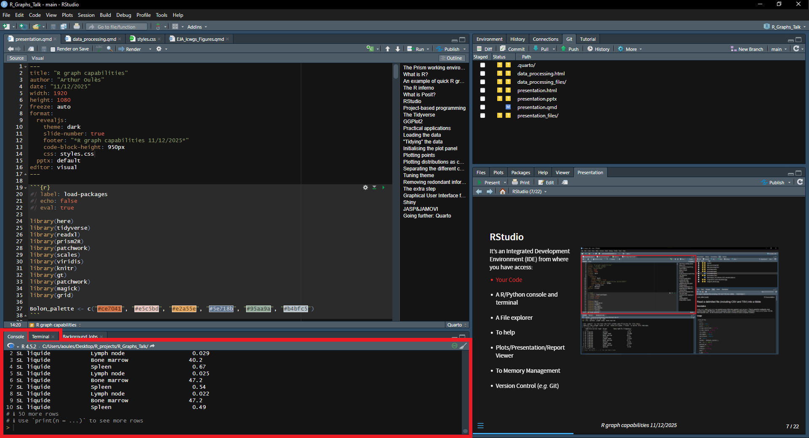
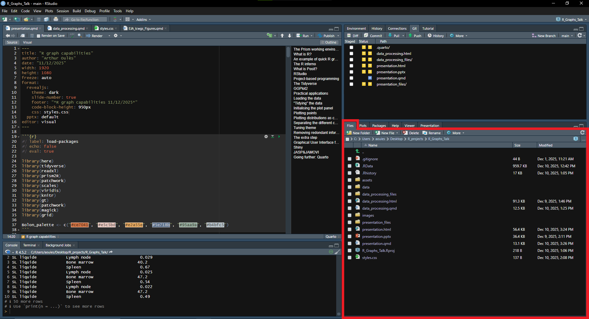
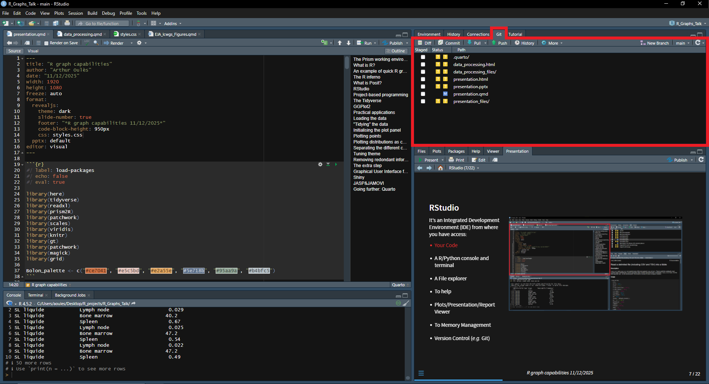

Graphs and data analyses in R
![]()
What is R?
Programming language and opensource software based on
FortranandCMaintained by The R Foundation, not-for-profit
Designed for statistical computing and data visualisation

R’s not-so-user-friendly Graphical Interface
The R inferno

What is Posit?
It is and open-source data science software company

RStudio
It’s an Integrated Development Environment (IDE) from where you have access:
- Your Code
- A R/Python console and terminal
- A File explorer
- To help
- Plots/Presentation/Report Viewer
- To Memory Management
- Version Control (e.g. Git)







Project-based programming

The Tidyverse

The Tidyverse
tibble: A package introducing a new type of dataframereadr: A package to read multiple file formats to tibblestidyr: A package to reformat raw data to a ggplot2-friendly formatggplot2: A packagage for creating graphics
tidyr&dplyr

The pipe operator and tidyr. Credit: Selina Cheng
tidyr&dplyr
The pipe operator and tidyr. Credit: Selina Cheng
ggplot2

ggplot2 is an R package allowing the production of graphics using “The Grammar or Graphics”.
ggplot2
ggplot2 is an R package allowing the production of graphics using “The Grammar or Graphics”.

Complex Figures

Genetic population structure of the Black Surfperch Embiotoca jacksoni. DOI: 10.1111/mec.70073